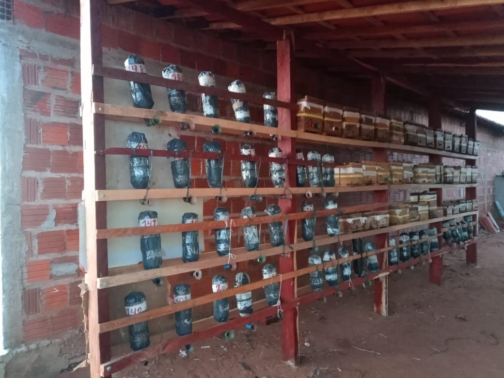

Desenvolvimento da Associação de Meliponicultoras e Meliponicultores de Bela Vista do Piauí (AMBV-PI)
A Associação de Meliponicultoras e Meliponicultores de Bela Vista do Piauí (AMBV-PI) tem demonstrado um crescimento significativo nos últimos meses, conforme evidenciado pelos dados de produção e iniciativas de expansão.
EVOLUÇÃO DA ASSOCIAÇÃO
No mês de janeiro, a AMBV-PI distribuiu 1950 iscas e conseguiu capturar 681 enxames manso e 5 abelhas brabo. A meta de capturas foi estabelecida em 1932 pelo período de Novembro a Abril. Além disso, foram registrados 477 enxames manso, 70 enxames brabo e 43 de outras espécies em caixas.
Em fevereiro, o número de iscas distribuídas aumentou de 1950 para 2379, resultando na captura de 914 enxames manso e de 70 para 78 enxames brabo. O total de enxames em caixas também aumentou, de 477 para 492 enxames manso, de 77 para 92 enxames brabo e de 43 para 49 de outras espécies. Houve um pequeno número de perdas, com 17 enxames manso, 12 enxames brabo e 1 de outras espécies.
No mês de maio, a AMBV-PI faz um levantamento para saber como foi a distribuição de iscas, na qual nos meses segunte de fevereiro o números de iscas espalhadas aumentou de 2379 para 2802, das quais 1611 foram capturadas, representando 57% das iscas espalhadas. O número de enxames em caixas também aumentou de 492 para 864 enxames manso, de 78 para 115 enxames brabo e de 49 para 60 de outras espécies. Aumentando o número total de enxames em caixas de 633 para 1039. Houve também um aumento de perda, de 17 para 127 de enxames manso, de 12 para 16 enxames brabo e mais uma perda de outras espécies.
O aspecto mais notável é a projeção de crescimento para os próximos anos, com uma estimativa de 12 000 enxames em três anos. Esse aumento previsto na população de abelhas meliponas ressalta a importância do apoio contínuo à associação, especialmente em termos de recursos e infraestrutura adequada para abrigar esses enxames, que tem a prioridade aquisição de caixas para abrigar as colonias das meliponas.
A iniciativa de fornecer três caixas para cada sócio, com recursos provenientes de várias fontes, incluindo TED-Mulheres da Embrapa Meio-Norte, foi um passo significativo na direção certa. No entanto, a necessidade de mais recursos permanece evidente, especialmente para garantir que todos os associados tenham acesso a caixas e meliponários apropriados.
Além disso, a AMBV-PI reconhece a importância da presença nas redes sociais para divulgar seu trabalho e alcançar um público mais amplo. As plataformas como YouTube e Instagram, oferecem oportunidades para compartilhar conhecimento, promover produtos e angariar apoio da comunidade em geral.
Em suma, o desenvolvimento da Associação de Meliponicultoras e Meliponicultores de Bela Vista do Piauí está em ascensão, impulsionado pela dedicação dos membros, o apoio de parceiros e a visão de um futuro próspero para a meliponicultura na região. Com recursos adicionais e um compromisso contínuo com a inovação e a sustentabilidade, a associação está bem posicionada para alcançar seus objetivos e contribuir para o desenvolvimento econômico e ambiental local.